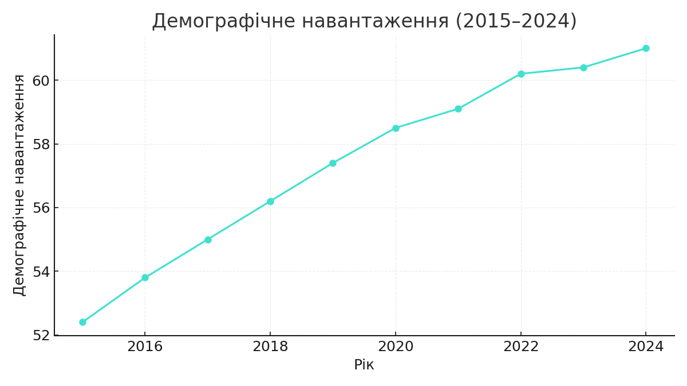
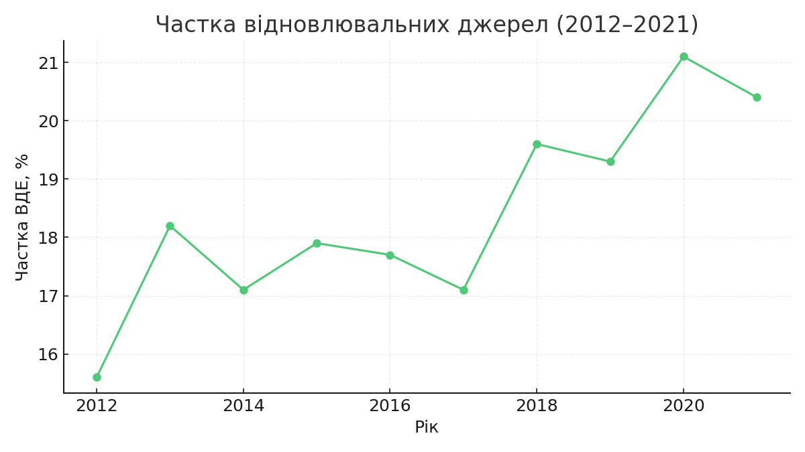
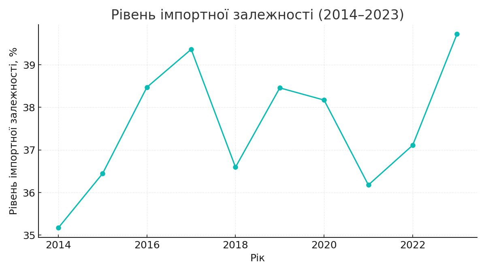
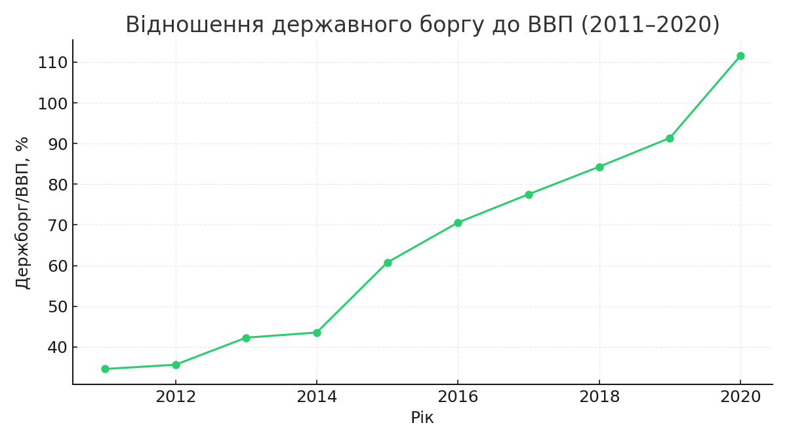

Економічна безпека Болгарії
Короткий висновок
За підсумками аналізу за 2012–2024 роки, економічна безпека Болгарії має змішані показники. Виробнича та продовольча безпека показують покращення: урожайність зернових зростала в середньому, а виробництво зерна на душу населення перебуває на оптимальному рівні. Водночас демографічна безпека викликає занепокоєння — демографічне навантаження зростало й перебувало на високому (абсолютно небезпечному) рівні. Енергетична безпека має позитивні сигнали щодо частки відновлювальних джерел, але рівень імпортної залежності залишається на незадовільному рівні. Макроекономічні показники (безробіття) покращилися — воно знизилось, але фінансова безпека у вигляді державного боргу до ВВП демонструє значне зростання і є критичною. Відкритість економіки є високою, що дає і можливості для експорту, і ризики зовнішніх шоків. Загалом, тенденції вказують на необхідність політик, що зменшують демографічні ризики, стримують державний борг та знижують енергетичну імпортну залежність.
Графіки (дані з вашого завдання)
1) Урожайність зернових (2013–2022)

2) Демографічне навантаження (2015–2024)
3) Частка відновлювальних джерел (2012–2021)
4) Рівень імпортної залежності (2014–2023)
5) Держборг/ВВП (2011–2020)
6) Рівень безробіття (2015–2024)